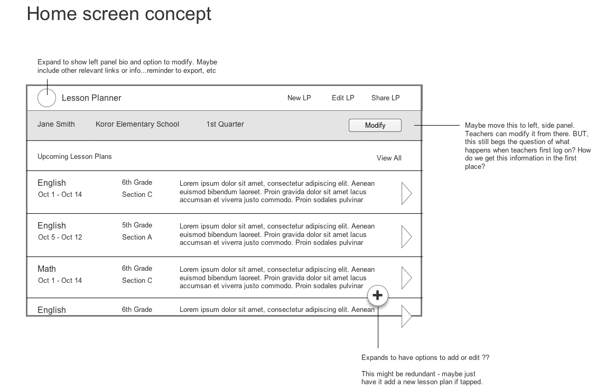

The Client. The Palau Ministry of Education (MOE), responsible for creating and evaluating the curriculum for all public school students in the country of Palau.
The Task. Design and develop a tablet app that allows teachers in Palau to create lesson plans.
My Role. I led the initiative as a Technology Consultant and was responsible for all design and development. I worked with the Palau Ministry of Education to set goals and evaluate solutions.
Constraints. Due to Palau’s limited internet connectivity, the app would have to work almost entirely offline. Lesson plan requirements and expectations were set by the Ministry of Education.
Result. Released the Palau Lesson Planner app to all Palau public school teachers in grades 1-8. Held a training seminar and Q/A at a Palau educators’ conference to introduce the app prior to the beginning of the school year.
Background Research
To gain an understanding of the lesson planning process, I researched the education system in Palau more broadly. I spoke to teachers and administrators, utilizing process artifacts such as lesson plans and performance reviews. I used primary documents to understand the process and expectations for completing lesson plans.

Stakeholders and Personas
I identified four main stakeholders: Teachers, Students, the Ministry of Education, and School Administrators. Combined with background research, I created an overview for how information flowed between these stakeholders. I found that teachers are the bridge between students, administrators, and the MOE.
From interviews with teachers, I noticed three broad personas emerging. I found it helpful to think about personas in terms of current process and views on technology. I noted it would be important to cater to all three personas, especially those hesitant to adopt new processes.


Requirements and Prioritization.
From research, I learned that teachers and students in Palau had been supplied with tablets for several years. Given the portability of tablets and the relative technical experience of most faculty, the tablet was the most appropriate medium for updating the lesson plan process.
Thus, I established several broad goals I hoped to achieve over the course of the project:
- Supply primary app functionality
- Involve teachers in UX feedback
- Train and onboard teachers and faculty
- Address tech sustainability and robustness
- Limit the initial scope of the project to English and Math
Design Phase
I started by laying out the ideals I wanted to emulate through the UI:
- Improve efficiency and productivity in creating multiple lesson plans
- Anticipate teachers’ responses for common fields to save time
- Allow teachers flexibility, such as in editing lesson plans
- Emulate the familiar aspects of the paper-based process
My first sketches were very similar to the paper form teachers were already using. In these early phases, I focused more on content and organization rather than efficiency. I used these mockups to spur discussion early on with Palauan educators.

Integrating new features
Laying the groundwork with early designs led to new discoveries, and use cases I had assumed more nuanced became more prominent.
Referring to curriculum standards
One of the most prominent pain points was the need for teachers to dissect a separate document containing all the standards, objectives, and resources valid for a subject and grade. I streamlined this process by allowing teachers to multi-select from a stored list directly in the app.
Updating curriculum
The core curriculum - English, Math, Social Studies, Science, and Palauan - is updated annually. With this in mind, I made it a priority to allow the app to update when new content was available and an internet connection existed.
Referring to past lesson plans
Teachers in Palau need to look back to past plans to determine if learning criteria were met and revise future lesson plans.
Sharing
Teachers share lesson plans with principals and sometimes other teachers. Thus, the app allows plans to be exported locally or emailed if internet access is available.
Training
Acknowledging the people involved in the success of the app was crucial. In conjunction with development, I devoted time to training several employees at the Ministry of Education on how to update curriculum in the app. I created extensive documentation as result.
Additionally, I held a training session at a convention held by the Ministry prior to the new school year. Teachers were able to attend as I introduced the app and allowed them to install and walk through on their own devices.
What’s next
I understood early on that the most difficult challenge would be encouraging teachers to engage. Before leaving Palau, I proposed an onboarding plan with members of the Ministry that involved training and frequent feedback collection. I also met with the Minister of Education to discuss incentivizing the app for teachers over paper. The goal was to create evangelists who would promote the app in classrooms through word of mouth.


{kind=link}
{kind=link}
{kind=link}
{kind=link}
{kind=link}
{kind=link}
{kind=link}
{kind=link}
{kind=link}
{kind=link}
{kind=link}
{kind=link}